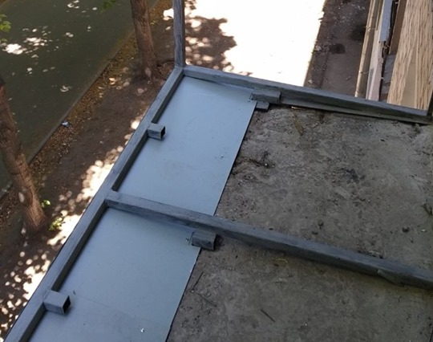

Сьогодні одним з найсучасніших рішень є "французький балкон" - це вид балкону, у якого немає (або майже відсутня) балконної плити, а огорожу встановлено з зовнішньої сторони безпосередньо в отворі; це скління від підлоги до стелі, на такому балконі немає парапету, а самі рами встановлюються на балконну плиту. Панорамні вікна дозволяють перетворити звичайний балкон у затишне місце для відпочинку з можливістю милуватися краєвидами міста. «Балкони-французи» роблять і в цілях економії на внутрішній обробці і утепленні, адже по суті, встановлюючи пластикові вікна від підлоги до стелі залишається тільки обшити одну стінку, стелю і зробити підлогу. Візуально даний тип скління збільшує простір і робить кімнату світліше.
Етапи реконструкції балкону:
-
Крок № 1 «Зварка каркасу»:
Якщо ви вирішили зробити повну реконструкцію балкона, то Вам, в першу чергу, необхідний виварений каркас (особливо це стосується старих балконів), потреба у вивареному каркасі визначається станом балкону. На даному етапі робиться зовнішня обшивка балкону, якщо є необхідність (коли балкон не є лише з віконних конструкцій (французький балкон)). До речі, за допомогою вивареного каркасу Ви можете розширити площу нового балкона. У нас Ви можете замовити таку послугу також окремо. Ось приклад фото вивареного каркасу.
 -
Крок № 2 «Скління»: